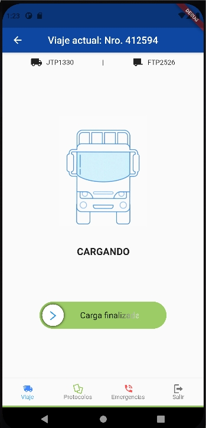

Inicio de sesión
Pantalla de inicio de sesión
La primera pantalla que se ve en la app es la de inicio de sesión, el cual es un formulario simple donde se debe escribir el número de documento y contraseña con la que se ingresa al sistema de sueldos.
Pantalla de recuperación de contraseña
En caso de haber olvidado la contraseña, abajo del botón de “Ingresar” hay una opción que al presionar te llevará al formulario para recuperar la contraseña:
Comenzar turno
Pantalla de inicio
Una vez se haya iniciado sesión, se verá la siguiente pantalla de inicio:
Presione el botón para comenzar el turno:
Menú de opciones
Se puede observar un menú abajo con diferentes opciones:
Viaje: Es la pantalla de inicio.
Protocolos: Es una pantalla que muestra los protocolos.
Emergencias: Es una pantalla que muestra los números para emergencias.
Salir: Botón para cerrar sesión de la aplicación.

Verificar información
Pantalla de verificación
Después de comenzar el turno, verá la siguiente pantalla:

En esta pantalla podrá modificar la información como el camión, el remolque y el kilometraje del camión.
Para modificar los datos presione el botón:

Cuando confirme que los datos son correctos presione:
Pantallas de modificación
Checklist
Pantalla de checklist
La pantalla que verá después de verificar la información será la del checklist que consta de un listado de objetos que deberá tener para poder realizar el turno.
Solicitar autorización
En caso de que no tenga alguno de los objetos y no pueda marcar la casilla en el checklist. No tendrá el botón de Continuar si no que tendrá un botón que le permitirá pedir autorización para hacer el turno, cuando lo presione verá una pantalla que dirá Esperando autorización, que se cambiará automáticamente cuando un administrador le dé la autorización para salir:
Viajes
Pantalla de selección de viajes
Una vez haya verificado la información y haya marcado el checklist o solicitado autorización para salir (según corresponda), verá la pantalla de selección de viajes, en donde verá un listado con los viajes que se le han asignado al turno, si no tiene asignado uno presione en Actualizar para actualizar la lista de viajes o también puede crear uno presionando en el botón Crear viaje en cual abrirá un formulario para crear el viaje
Puede tener uno o varios viajes asociado a un turno, para realizarlo, presione sobre el viaje. Se le abrirá una pantalla en donde verá la información correspondiente del viaje y lo podrá comenzar. Posterior a eso, entrará en las etapas del viaje.
Etapas del viaje
Una vez se haya comenzado el viaje se mostrará una pantalla en la que se verán las diferentes etapas del viaje, cada etapa del viaje se actualizará automáticamente con base en la ubicación del camión (GPS), sin embargo, si al completar una etapa la pantalla no cambia de estado a la siguiente etapa, deberá presionar el botón que está en el medio para indicar que la etapa se completó:

Viajes asociados
En el transcurso de un viaje puede recibir una notificación en la app para aceptar un viaje asociado normal o de tipo retorno. Si lo acepta, la pantalla se actualizará automáticamente para el segundo viaje una vez haya completado la descarga del primer viaje (viaje principal).
Justificación de paradas
Si en el transcurso del viaje hace paradas de más de 10 minutos,
recibirá una notificación con un formulario que deberá llenar para indicar el porqué realizó la parada.
De igual manera recibirá notificaciones por infracciones como exceso de velocidad, no llevar puesto el cinturón de seguridad, etc.
Carga de combustible y finalización del viaje
La última etapa del viaje, cuando está en camino a base, es la carga de combustible. En la app se abrirá una pantalla en donde deberá especificar la cantidad de litros de combustible, Urea y en caso de que no tome los kilómetros del camión automáticamente, deberá especificar cuántos kilómetros tiene el camión en ese punto.
Presione sobre finalizar carga y será dirigido a la pantalla de finalizar viaje.
Al presionar sobre Finalizar se le abrirá pantalla con un campo para especificar los kilómetros actuales del camión. La app los toma automáticamente, sin embargo, para algunas unidades no lo hace y deberá especificar los kilómetros actuales manualmente.
Finalizar turno
Una vez se finaliza el viaje, volverá ver la pantalla de selección de viajes en donde podrá seleccionar otro viaje o finalizar el turno.
Presione finalizar turno.
Verá una pantalla con el resumen de actividades del turno.
Finalizar turno
Una vez se finaliza el viaje, volverá ver la pantalla de selección de viajes en donde podrá seleccionar otro viaje o finalizar el turno.
Presione finalizar turno.
Verá una pantalla con el resumen de actividades del turno.